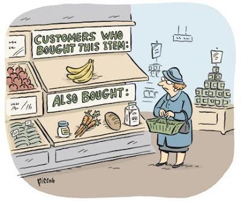

|
|
|
What is Machine Learning?
Isn't Machine Learning just statistics?
Warning... Clean Data required
- Garbage In Garbage Out
- Context is King
- Big data is not necessarily helpful
- Overfitting - prediction is suspiciously good
Classification
- Classification : Who's a good dog (Breed)?
-
What two or multiple categories does an item fit into

Regression : values are continuous and have a constant slope

Clustering
- Identify a relationship between things without predefined labels
-
Outlier/Anomaly detection

Recommendation

Key Terms
- Features
- Model
- Supervised Learning, Unsupervised, Semi-supervised
- Model Validation
- Over/Under fitting
Validating Models and Overfitting
- A model learns from examples
- We want our model to be robust enough to give us a prediction from unseen data
-
We can use various tools to verify how well our model is performing
- Cross Validation, Root Mean Squared Error, Receiver Operating Characteristic

Tools
- Any language, many tutorials often use R or Python
- Data Frame library to ease data exploration
- In .Net: Accord Framework